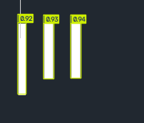

I · l · 1과 다른 새 클래스 67번으로 12회 추가 학습했습니다. 기존 클래스 번호는 유지했습니다.
새 모델 전체 교체에서는 기존 문자 일부 손실이 관측되어, 기존 62/67클래스 모델을 유지한 결합 실행기를 별도로 만들었습니다. 새 모델의 | 후보 중 점수 0.6 이상이며 원본 획이 단순한 세로 막대로 확인되는 경우만 반영합니다. 기존 DWG와 기본 실행기는 교체하지 않았습니다.
같은 글꼴 템플릿으로 만든 합성 검사입니다. 다른 실제 도면의 정확도를 의미하지 않습니다. 기존 260장에서는 전체 결합 전후 결과가 동일했습니다.
| 검사 세트 | 이미지 | | 검출/정답 수 | | 오탐 | 기존 정답 손실 이미지 |
|---|---|---|---|---|
| old_alphanumeric | 130 | 0/0 | 0 | 0 |
| old_punctuation | 130 | 0/0 | 0 | 0 |
| new_bar_scenes | 130 | 279/354 | 0 | 0 |
3개 모두 |로 검출했습니다. 점수 약 0.924~0.940. 이 이미지는 학습에 사용했으므로 독립 검증이 아닙니다.

원본 작은 이미지를 바로 384px로 확대하면 이번 원본 검사는 실패했습니다. 결합 실행기는 원본 크기의 384px 타일로 |를 검사합니다. 해당 확대 실패도 모델 단독 전후 비교에 기록했습니다.
새 실행 파일: font_yolo_trial/vertical_bar_reader.py
새 가중치: font_yolo_trial/vertical_bar/training/weights/best.pt
결합 검사 수치